Veterán
Velké kunratické
Časopis určený veteránkám, veteránům a všem příznivcům legendárního závodu
Číslo 6 / červenec 2024 Předchozí čísla: XI/20, V/22, XI/22, V/23, XI/23
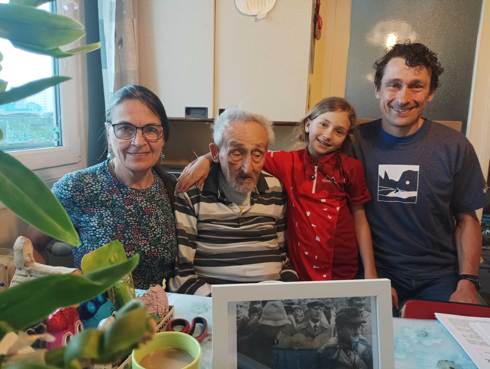
Emil Pospíšil 100! Mimořádného životního jubilea se dožil pan Emil Pospíšil, který dne 2. května 2024 oslavil sté narozeniny. O Velkou kunratickou se zasloužil jako málokdo jiný: po dobu 25 let (1979 až 2004) byl jejím ředitelem, za jeho éry došlo k velkému rozmachu tohoto závodu, byl to on, kdo při slavném 50. ročníku osobně přivítal předsedu mezinárodního olympijského výboru Juana Antonia Samaranche. Na snímku jsou s ním dvě z jeho tří dětí Jana a Vítek (oba již veteráni VK) a Vítkova dcera Eliška – i ta už má tři starty v Kunraticích za sebou.
Bohatý a plodný život Emila Pospíšila
Emil Pospíšil se narodil 2. května 1924 a řadí se k několika málo pamětníkům, kteří jsou starší než Velká kunratická. Pokládám si za velkou čest, že jsem pana Emila mohl krátce po jeho stých narozeninách navštívit a popovídat si s ním v jeho bytě na pražském sídlišti Novodvorská, kde žije se synem Vítkem a kde se na pravidelných návštěvách střídají též jeho dvě dcery Jana a Zorka. Emil Pospíšil se neřadí k rekordmanům Velké kunratické, ani nesbíral čárky za opakované účasti, přesto se o tento závod zasloužil jako málokdo jiný.
Celý svůj život prožil v Praze: dětství nejprve v Nuslích, poté v Braníku a v současné době bydlí na sídlišti v Novodvorské ulici, nedaleko od svých předchozích adres. Emilův tatínek byl stavebním inženýrem, před válkou měl úspěšnou firmu, která projektovala silnice, dálniční nadjezdy, vyprojektovala a postavila několik domů. Profesně se Emil potatil. Za války dokončil stavební průmyslovku, po válce inženýrské stavitelství na ČVUT a dál kráčel v otcových stopách, mimo jiné svou profesi uplatnil při několikerém stěhování své rodiny. Oženil se celkem dvakrát. První manželství se nevydařilo, ale bylo bezdětné a se svou první ženou se po dohodě a bez vzájemné zášti rozešli. Svou osudovou ženu Vlastu poznal nejprve jako kamarádku na četných sportovních, vodáckých a turistických akcích, v roce 1959 se po několikaleté známosti vzali a bylo to šťastné manželství, které vydrželo plných 63 let, až do Vlastiny smrti v roce 2022. Své tři děti – Janu, Zorku a Vítka – vedli od mala k lásce k přírodě a horám, k pohybu a ke sportu, což platí i o vnoučatech a pravnoučatech.
Emil se spolu s mladším bratrem Jeňou od dětských let s velkým zanícením věnoval sportu, a to sportu všeho druhu. Chodil do Sokola a zúčastnil se Sokolského sletu v roce 1938, běhal v oddíle ABC Braník, s partou pořádali cyklistické výlety. V létě se s kluky koupali ve Vltavě a Sázavě a jezdili na vodácké výlety. Pamatuje dobu, kdy Vltava v zimě zamrzala a kdy se na ní bruslilo, ani tam Emil nemohl chybět. Vzácnou vzpomínku má z doby Protektorátu na běžecký závod v Houštce, kde se střetl se samotným Emilem Zátopkem. Nabídka sportovního vyžití byla nepřeberná, ale už tehdy Emil vedle svého vlastního sportování osvědčil svůj organizační talent. „V ABC Braník jsme s kamarády vybudovali 300 metrů dlouhou atletickou dráhu, doskočiště a vrhačské sektory a na tomto provizorním hřišti jsme uspořádali řadu utkání a závodů,“ vzpomíná Emil Pospíšil. V Sokole se stal předsedou lyžařského oddílu, s kterým pak jezdili na hory lyžovat. Po vojně jej bratr Jeňa přivedl mezi atlety na Děkanku, kde se Emil brzy zapojil do „bafuňářské“ práce a stal se předsedou atletického oddílu. Nesportoval jenom sám pro sebe, ale uspokojovalo ho, když mohl připravovat sportovní akce a podniky pro jiné.
Odtud to už byl jenom krůček k tomu, aby se v 70. letech zapojil do organizování Velké kunratické, která byla tehdy jednou z nejmasovějších sportovní akcí u nás. Sám k tomu říká: „Kamarádil jsem s Vilémem Sitterem, který byl od roku 1973 ředitelem Velké kunratické. Měl jsem v té době dost zkušeností s organizováním sportovních akcí a rád jsem mu s pořádáním VK pomáhal. Když v roce 1979 náhle zemřel, tak nějak automaticky to břímě padlo na mne.“ Tak se stal Emil Pospíšil v roce 1979 ředitelem Velké kunratické a byl jím až do roku 2004, plných 25 let. Na otázku, co se za tu dobu ve Velké kunratické změnilo, odpovídá. „Bylo toho hodně. Museli jsme řešit rostoucí zájem o tento běh, změnit zajišťování regulérních výsledků, zajistit jejich vyvěšování, nabídnout nové trasy pro děti. Kdo nikdy neorganizoval podobný závod, většinou nemá ponětí, jakou práci dá zkoordinovat rozhodčí a všechny ostatní pořadatele, nebo třeba zajistit občerstvení. A na co nesmím zapomenout, je opravdu rozsáhlá brigádnická činnost desítek dobrovolníků před závodem i po něm, tady se nerozlišovalo, kdo je ředitel a kdo řadový člen oddílu.“ Ptát se na nejslavnější ročník Velké kunratické je asi zbytečné… „Samozřejmě, byl to jubilejní 50. ročník v roce 1983, nad kterým převzal záštitu Mezinárodní olympijský výbor a na který přijel sám jeho předseda Juan Antonio Samaranch. Tento ročník se připravoval dva roky předem a dodnes mám velkou radost, že vše vyšlo podle našich představ.“
Je jisté, že rekord v počtu účastníků z roku 1983, kdy na různých tratích proběhlo cílem 9128 startujících, už nebude nikdy překonán, kapacita Kunratického lesa to neumožňuje. A jaké další problémy musela Velká kunratické řešit v dalších letech? „Po roce 1989 se ozvali ekologové, ti by tehdy Velkou kunratickou nejraději úplně zrušili. Byla to vypjatá atmosféra, ale nakonec došlo k rozumnému kompromisu, počet účastníků je omezen tak, aby ekologové byli spokojeni a les o druhé listopadové neděli neutrpěl újmu.“
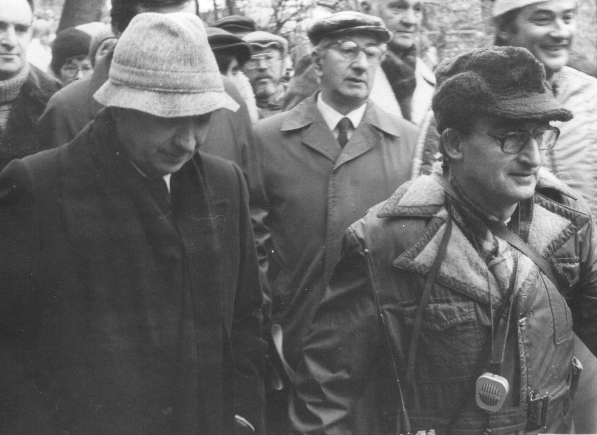
Ředitel Velké kunratické Emil Pospíšil (vpravo) s Juanem Antonio Samaranchem v roce 1981. Foto: Vladimír Podroužek
Nemohl jsem si odpustit otázku, jaký recept má pan Emil Pospíšil pro ty, kteří se chtějí dožít tak požehnaného věku. Odpověď byla skromná a dost překvapivá. „Vlastně ani nevím, nedělám pro to nic mimořádného.“ Tatínkova slova musela uvést na pravou míru dcera Jana: „Není to pravda, tatínek pravidelně cvičí a dodnes s ním chodíme na zdravotní procházky. Když to nejde, třeba kvůli počasí, tak chodíme aspoň na chodbě. Udržuje se v kondici a všichni mu přejeme, aby mu ještě dlouho vydrželo zdraví a jeho vitalita.“
V úvodu jsme napsali, že pan Emil Pospíšil v Kunraticích nelámal rekordy ani nesbíral čárky za počty startů. Vedl však k tomu své potomky a připravoval jim sportovní cestu, po níž se mnozí vydali. Celkem má Emil Pospíšil 12 potomků tří generací. S výjimkou nejmladšího Filipa (narozeného v roce 2020) se na start Velké kunratické aspoň jednou postavil každý z nich. Že Velkou kunratickou běhali nebo běhají i partneři Emilových dětí, je jaksi samozřejmé.
Sepsat všechny sportovní aktivity a úspěchy Emilových potomků by vydalo na další článek, zmíníme proto jen malou část, která má souvislost s Velkou kunratickou. I to bude, jak uvidíte, úctyhodný seznam. Nejstarší dcera Jana Drábková (63 let) je veteránkou Velké kunratické, má na svém kontě 27 startů. Velkou kunratickou běhá pravidelně i její dcera Jana, ta má již 25 startů, z toho 18 na ženské trati, takže za dva roky se i ona zařadí mezi veteránky VK. Mladší sestra Zorka (59 let) se vydala jinou cestou, víc než sport ji zaujala grafika a je v této činnosti velice úspěšná, ale aby držela partu, i ona se jednou postavila na start Velké kunratické. Největších sportovních úspěchů dosáhl nejmladší Emilův syn Vítek (55 let). V radiovém orientačním běhu vybojoval několik titulů mistra světa a Evropy. Reprezentoval i v orientačním a lyžařském orientačním běhu, kde získal několik titulů na republikových mistrovstvích a později vyhrál i veteránské mistrovství světa. Běžel také několik maratonů. Také ve Velké kunratické byl velice úspěšný. Vyhrál svou kategorii už jako osmiletý, pak jako dorostenec, v hlavní mužské kategorii dvakrát obsadil 2. místo. Také on je už více než 10 let veteránem s 33 starty. Nejvíce úspěchů z nejmladší generace získala pravnučka Alžběta (narozena 2005), která se ve své kategorii v letech 2017 a 2018 po vzoru strýce Vítka stala mistryní Evropy v radiovém orientačním běhu. Jana Drábková vypočítala, že potomci Emila Pospíšila mají na různých tratích Velké kunratické za sebou celkem 153 startů, partneři Emilových dětí pak dalších 16. Obdivuhodná bilance!
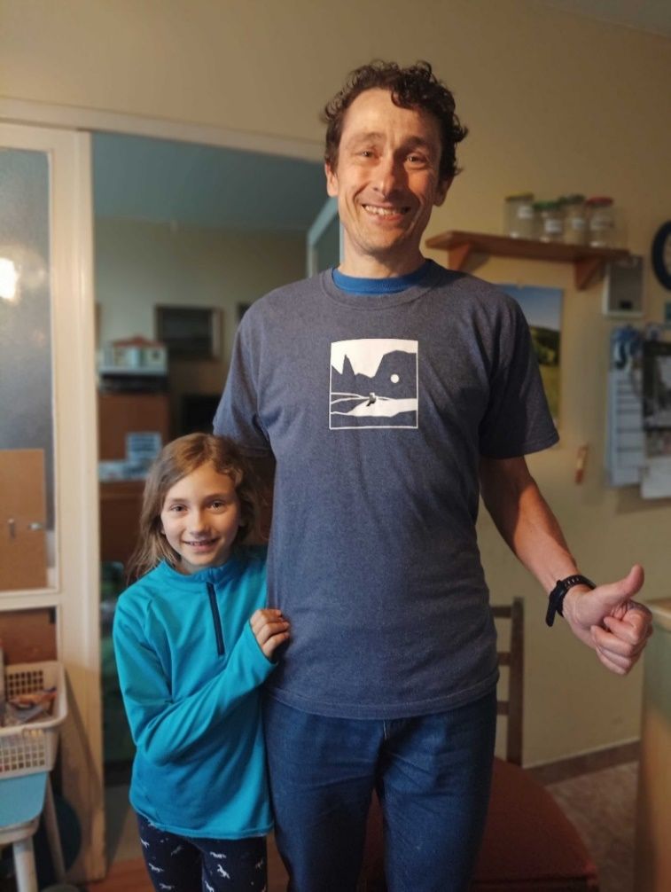
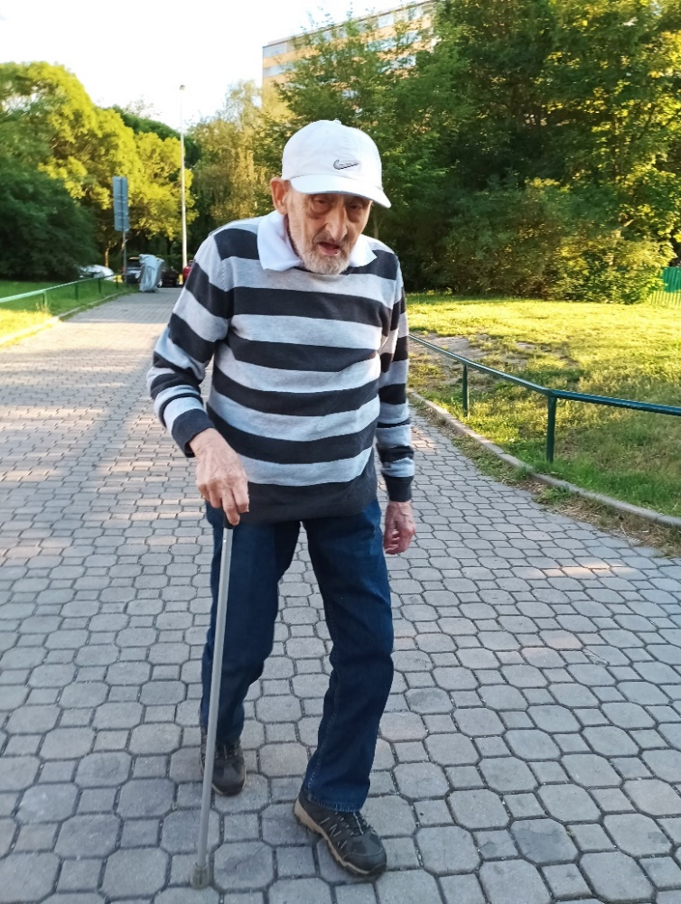
Tři generace sportovního rodu Pospíšilů. Na prvním snímku je vnučka Eliška (která je mladší než některá pravnoučata) s otcem Vítkem, vpravo Emil Pospíšil na jedné ze svých pravidelných procházek, kde ho vyfotografovala dcera Jana.
Vítkova dcera Eliška je další sportovní nadějí rodu Pospíšilových. Podle jejích slov ji nejvíc baví sjezdové a běžecké lyžování (v obojím úspěšně závodí), v létě pak orientační běh, lezení a tanec. I ona má už za sebou křest ve Velké kunratické.
| Mohli bychom ještě dlouho psát o dětech, vnoučatech a pravnoučatech, ale náš článek je věnován především panu Emilovi, proto zde dosud nekončící ságu sportovního rodu Pospíšilových opustíme. Přejeme panu Emilu Pospíšilovi, ať mu ještě dlouho vydrží zdraví, elán a optimismus a ať napíše ještě hodně stránek do rodinné kroniky nazvané Paměti dědy Emila, kterou začal psát krátce před svou devadesátkou a kterou průběžně stále doplňuje. | LS |
Rok 1939 – 6. Velká kunratická
Závod ve výbušné atmosféře protiněmeckých demonstrací
6. ročník Velké kunratické se uskutečnil 12. listopadu 1939, v době, kdy České země jsou součástí Protektorátu a Evropu sužuje válka, která se brzy rozroste ve válku světovou. V Praze panuje výbušná atmosféra. Během masových demonstrací proti nacistické okupaci byl 28. října zastřelen dělník Václav Sedláček a smrtelně postřelen student Jan Opletal. Jan Opletal zemřel 11. listopadu, den před Velkou kunratickou. Její účastníci zatím netuší, co vše se stane během nejbližších dní a jak se tyto dny zapíší do naší historie. Pohřbu Jana Opletala dne 15.11. se zúčastní tisíce studentů, což v Praze rozpoutá novou vlnu protiněmeckých demonstrací, které budou brutálně potlačeny. 17. listopadu dojde k uzavření českých vysokých škol, devět studentů bude popraveno a 1200 studentů bude deportováno do německých koncentračních táborů.
Poprvé bez Obešla
Sportovní akce se v době Protektorátu staly vítaným útěkem od reality a Velká kunratická v roce 1939 nebyla výjimkou. V mimořádně teplém listopadovém počasí (sucho, podle záznamů z Klementina se teplota toho dne pohybovala mezi 7,6 až 10,3°C) se na start postavilo 35 borců. Stala se věc dosud nevídaná, mezi účastníky poprvé chyběl Jaroslav Obešlo, v té době zatím „jen“ dvojnásobný vítěz. To ještě nikdo nemohl tušit, že v budoucnu přidá další čtyři prvenství a že tato výjimečná absence z důvodu nemoci bude jedinou až do roku 1987, kdy se počet Obešlových startů zastaví na úctyhodném čísle 53. Naopak poprvé se na start postavil Lubomír Čuhel, ve svých 23 letech dosáhl času 16:16 a umístil až v druhé polovině startovního pole na skromném 20. místě. Zatím nic nenasvědčovalo tomu, že se v blízké budoucnosti vypracuje k vítězství a v daleké budoucnosti bude patřit k výrazným postavám veteránské kategorie.
Vysoká sportovní úroveň a kamarádský duch závodu
Vítězem 6. ročníku se stal František Král, který zopakoval své prvenství z minulého roku. Dosáhl výborného času 13:19, kterým zaostal pouhých 5 vteřin za Fojtíkovým traťovým rekordem. Oproti loňskému výkonu se zlepšil o více než minutu (před rokem 14:32) a totéž se dá říct o většině ostatních účastníků, kteří využili teplého a suchého počasí k překonání osobních rekordů. Před rokem totiž závodníky trápily rozvodněné potoky a mimořádně rozbahněná trať (což jsme v minulém čísle nezmínili). Třetí v pořadí Vratislav Novotný se zlepšil z loňského času 15:24 na 14:06, čtvrtý Antonín Štorkán (skončil na 4. místě potřetí za sebou) z 15:15 na 14:29. Jak bylo v té době tradicí, ve výsledkové listině se tato jména neobjevila. Vratislav Novotný startoval pod přezdívkou Nero, Štorkán byl ve výsledcích Berta. Pod přezdívkami startovali i někteří další borci, kteří tím, aniž to tenkrát tušili, zanechali svědectví o kamarádském duchu prvních ročníků závodu. V minulých číslech veterána VK jste si již mohli přečíst, že po běhu jeho účastníci ještě sehráli fotbalový zápas a sportovní den zakončili veselicí v Bartůňkově mlýně.
Závodilo se ovšem naplno a samotný běh brali účastníci „smrtelně“ vážně. Za zmínku stojí i vysoká sportovní úroveň závodu. Ačkoli mezi závodníky nebyli zdaleka jenom atleti, z 35 startujících dosáhlo devětadvacet času pod 17 minut, poslední závodník běžel za 20:03. A dokážete si představit, že by se dnes mezi nejlepšími umístil sprinter, jako tehdy Emil Schwär, nebo dokonce vrhač, jako to v třicátých letech opakovaně dokázal „Berta“ Štorkán?
VYČTENO Z VÝSLEDKŮ 6. ROČNÍKU 1939
| 1. František Král | 13:19 | 4. Berta Štorkán | 14:29 | 7. Fučíkovský ml. | 15:13 |
| 2. Stanislav Otáhal | 13:42 | 5. Jan Vondřejc | 14:30 | 8. Fučíkovský st. | 15:16 |
| 3. Novotný-Nero | 14:06 | 6. Moc | 15:06 | 9. Emil Schwär | 15:35 |
Vladek Lacina – veslařský reprezentant a veterán VK
Výraznou a nepřehlédnutelnou skupinu mezi účastníky Velké kunratické tvoří vodáci. Žádný div – vždyť v době závodní kariéry veslařů či kanoistů bývá běžecký trénink nedílnou součástí jejich přípravy a v Kunraticích se pak často vyrovnají i těm nejlepším běžcům. Mnozí se do Kunratic vracejí i poté, co se závodní činností skončí, a není žádnou výjimkou, že se „prozávodí“ mezi veterány. Jedním z nejvěrnějších je dlouholetý reprezentant ve veslování, trojnásobný olympionik a držitel bronzové medaile z OH v Montrealu 1976 Vladek Lacina (nar. 1949). Veteránem se stal před více než 30 lety, v loňském roce obdržel stříbrnou medaili „Za věrnost Velké kunratické“, která se uděluje za 50 absolvovaných startů. Vladek má na svém kontě ještě o jeden start víc, počet jeho účastí se zastavil v roce 2020 na čísle 51.
Během své sportovní kariéry dokázal vystudovat vysokou školu a byl zaměstnán ve Výzkumném ústavu ČKD, kde se zabýval se problematikou spalovacích motorů. V roce 1988 získal na Fakultě strojního inženýrství ČVUT také titul CSc. Vladek je ženatý, s manželkou Vlaďkou mají dva syny Radka a Vojtěcha a vnuka Pavla. O jeho závodění, o Velké kunratické i o životě jsme si s Vladkem povídali v jeho bydlišti v Praze 4 – Hodkovičkách.
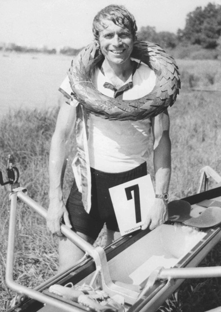
Vladek Lacina po vítězství na mistrovství republiky v Třeboni 1983. Byl to jeho poslední titul (celkově třináctý) na skifu typu křídlo, který sám pomáhal konstruovat a vyrobit.
Jak ses dostal ke sportování a kdo tě k němu přivedl?
Byli to především rodiče, ale i skvělí učitelé na základní škole a na gymnáziu. Dělal jsem více sportů, například plavání, atletiku nebo orientační běh. Rozhodující vliv na můj přechod k veslování měli mí rodiče. Moc si jich vážím, byli pro mě velkými morálními i sportovními vzory. Neměli lehký život, má matka Božena za války prošla koncentračním táborem v Ravensbrücku a její první manžel Jindřich Klečka zaplatil svou účast v protinacistickém odboji smrtí, když se po odhalení raději sám zastřelil, aby nepadl do rukou gestapa. Druhý matčin manžel, můj otec Svatopluk byl po válce zatčen za účast v odboji proti nastupujícímu komunistickému režimu. Dostal osmnáct let, z kterých si odseděl deset, a byla to léta velmi tvrdá, strávená těžkou fyzickou prací v uranových dolech v Jáchymově. Léta jsem se s ním mohl vídat jenom přes okna pankrácké věznice. Propuštěn byl díky amnestii v roce 1960. V mých 16 letech mě přivedl do Veslařského klubu Blesk a už jsem u veslování zůstal. Stal jsem se vlastně pokračovatelem rodinné tradice, protože veslovali nejen mí rodiče, ale dokonce už můj praděda. Trénovali mě postupně Julius Gerhard, Pavel Hofmann, Václav Kozák a Jiří Ulč.
Ve veslování jsi dosáhl řady úspěchů. Pochlub se s nimi čtenářům Veterána VK.
Veslování mi šlo, asi jsem měl dobrý základ z ostatních sportů. V roce 1967 jsem byl vybrán do juniorské reprezentace, na skifu jsem vyhrál utkání proti tehdejší NDR, to jsem poprvé po svém závodě slyšel hrát naši hymnu. Do seniorské reprezentace jsem se dostal o dva roky později. Zpočátku jsem jezdil na dvojskifu s Josefem Strakou, na olympiádě v Mnichově 1972 jsme byli šestí a na dvou následujících mistrovstvích světa v letech 1973 a 1974 nám jen těsně utekla medaile, skončili jsme vždy na nepopulárním 4. místě.
Pak přišel největší úspěch, medaile na OH v Montrealu…
Po onemocnění Filipa Koudely jsem dostal příležitost startovat na párové čtyřce, která tehdy měla medailové ambice a v roce 1976 v Montrealu je také naplnila. Bronzová medaile z roku 1976 je jedinou mou olympijskou medailí. Měl jsem z ní velkou radost, ale na druhou stranu mne to trochu mrzelo kvůli mému dlouholetému parťákovi Pepíkovi Strakovi, který se medaile z OH nedočkal. Srovnatelným úspěchem s olympijskou medailí bylo 4. místo na skifu na další olympiádě v roce 1980 v Moskvě.
Měl jsi šanci startovat i na následující olympiádě, v pořadí už čtvrté. Většina čtenářů samozřejmě ví, jak to dopadlo, přesto tě prosím, abys připomněl, jak jsi sám nesl naši vynucenou neúčast na OH v roce 1984.
Bylo mi 35 let, měl jsem jet opět na skifu a na olympiádu jsem se velice těšil. Z rozhodnutí našich představitelů o bojkotu OH v Los Angeles jsem byl pochopitelně zklamán, jako všichni sportovci, kteří se na OH poctivě připravovali. Bylo jasné, že na další olympiádu se už nepodívám a svou reprezentační kariéru jsem raději ukončil. Na oddílové úrovni jsem závodil do roku 1986.
Od veslování se konečně se dostáváme k Velké kunratické. Stal ses nejen veteránem VK, ale dokonce jsi to dotáhl na 51 startů. Čím tě Velká kunratická tak oslovila?
Běžecký trénink vždy byl nedílnou součástí přípravy veslařů. Já jsem měl běhání rád a Velká kunratická vždy byla pro mne příjemným zakončením sezony. Nebyl jsem zdaleka sám, mezi veslaři a kanoisty je řada příznivců VK, mnozí ji běhali ještě lépe než já a někteří to také dotáhli až do kategorie veteránů. Za všechny můžu jmenovat mého kamaráda Mirka Laholíka, který veteránskou kategorii dokonce dvakrát vyhrál. Bohužel všichni stárneme. Pro zajímavost jsem sestavil sobě a Mirkovi graf, který jsem nazval grafem stárnutí a je na něm vidět, jak se v průběhu času měnily naše výkony.
Na závěr řekni čtenářům, čím se v současné době zabýváš, jaké máš koníčky a jestli a jak ještě sportuješ.
Zatím stále ještě pracuji, už od 90. let mám firmu Dagger, která je zaměřena na naftové a plynové motory. Sportuji tak, jak to zdravotní stav dovolí. Na běhání to už není, poslední Velkou kunratickou jsem běžel v covidovém roce 2020. Snažím se udržovat turistikou a nejraději mám kolo, konkrétně terénní cyklistiku. Rád trávím čas s rodinou a z koníčků bych uvedl fotografování a modelářství.
Takto dnes nejspíš potkáte Vladka Lacinu. Loď a běžecké boty vyměnil za horské kolo.
Na další stránce si můžete prohlédnout „grafy stárnutí“, na kterých vidíte, jak se v průběhu let měnily výkony ve Velké kunratické Vladka Laciny a Mirka Laholíka. Na vodorovné ose jsou jednotlivé ročníky Velké kunratické, na svislé ose dosažené časy. Znáte-li všechny své výkony na hlavní trati ve Velké kunratické, můžete si vlastní graf stárnutí sami sestrojit. U drtivé většiny veteránů VK by měl graf podobný průběh.
S Vladkem Lacinou si povídal Luděk Sedlák
Grafy stárnutí veteránů VK
Název nezní nijak optimisticky, každý veterán by byl nejraději, kdyby se ho stárnutí netýkalo. Toto přání je bohužel nesplnitelné, takže se podívejme na realitu, jak to s naší výkonností ve skutečnosti vypadá. Dva grafy, které vypracoval veterán VK Vladek Lacina, ukazují, jak se v čase mění výkonnost veteránů. Pokud si sami vytvoříte svůj vlastní graf stárnutí, jak ho Vladek příznačně nazval, zjistíte, že se od těchto dvou moc lišit nebude, ať už nejnižší hodnoty budou na 12, 14, nebo třeba na 16 minutách. Strmost a maximální hodnoty pak ovlivní okamžik, s jakou výkonností jste se s Velkou kunratickou rozloučili. Neblíží-li se váš graf dosud ke svému vrcholu, můžete dokonce popustit uzdu své fantazii a pokusit se odhadnout, kolik výběhů na Hrádek vás ještě čeká.
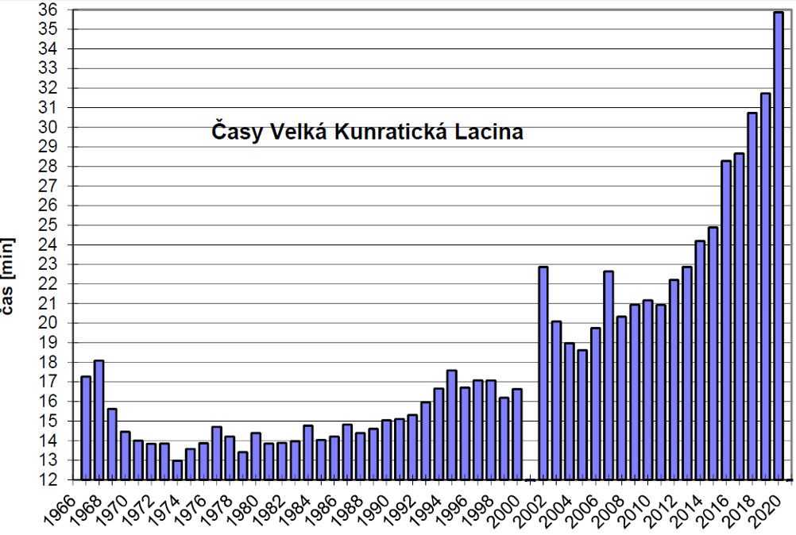
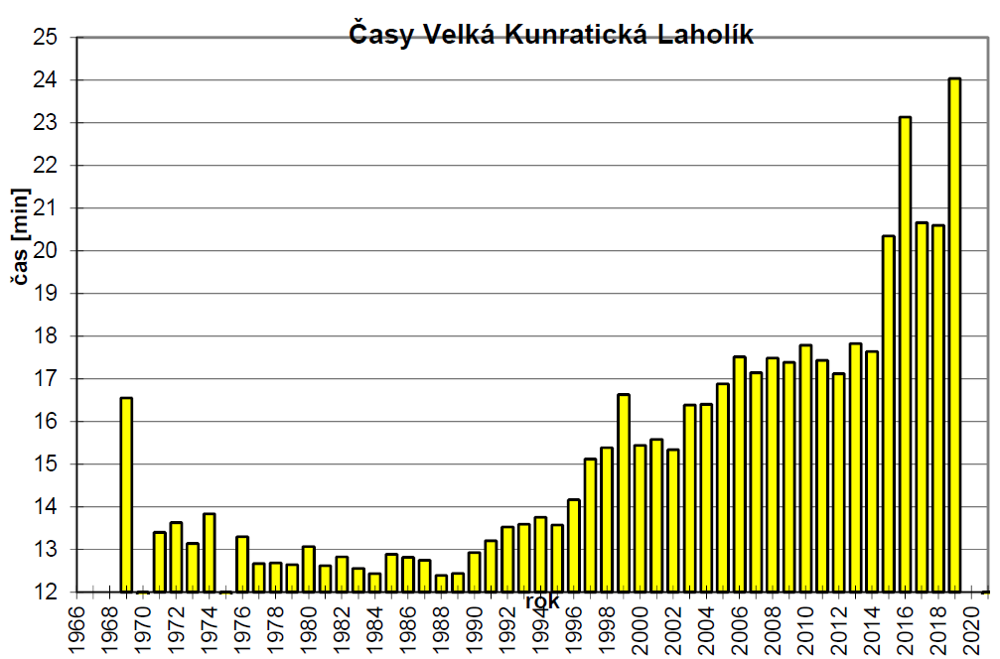
Zbyněk Sadil a syn po 50 letech
Velká kunratická už napsala nepřeberné množství rodinných příběhů. O jeden se s vámi podělil Zbyněk Sadil, veterán VK narozený v roce 1942. Je jedním z držitelů stříbrné medaile „Za věrnost Velké kunratické“, na svém kontě má 55 startů a v posledním ročníku startoval s číslem 5. Poslal nám fotografii z loňského 90. ročníku, na níž je se svým synem Honzou. Na tom by ještě nebylo nic mimořádného, spousta veteránů přivedla na start Velké kunratické své potomky, kteří pokračují v rodinné tradici, jak jste si ostatně mohli přečíst na prvních stránkách tohoto čísla v příběhu rodiny Pospíšilových.
Příběh Zbyňka Sadila a jeho syna se od ostatních přece jen něčím liší. „Na fotografii, kterou posílám, stojíme se synem Honzou na lávce přes Kunratický potok. Je to na stejném místě, kde nás zachytil fotograf v roce 1972. Bylo mi 30 let, Honzíkovi 3 roky a snímek se objevil v ročence k 40. ročníku v roce 1973,“ vzpomíná Zbyněk Sadil a přidává i svůj pohled na tehdejší ročníky Velké kunratické: „Nerad bych se zapsal jako nespokojený stařec, ale VK tenkrát byla příznivější pro strávení rodinného nedělního dopoledne, kdy jsme stihli doprovodit naše děti ke startu a jak je z obrázku patrné, ty nejmenší i doprovázet po trati a napovídat doleva, doprava… A pak je očekávat v cíli a stihnout i vlastní start. Domnívám se, že tím jsme potomky nepřímo přivedli ke sportu. Samozřejmě jsme všichni závodili, jak jsme nejlépe mohli.“
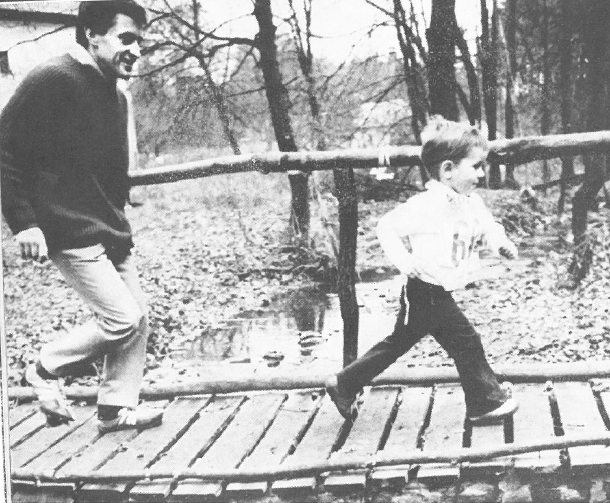
Zbyněk Sadil doprovází syna Honzíka při jeho prvním startu v roce 1972.
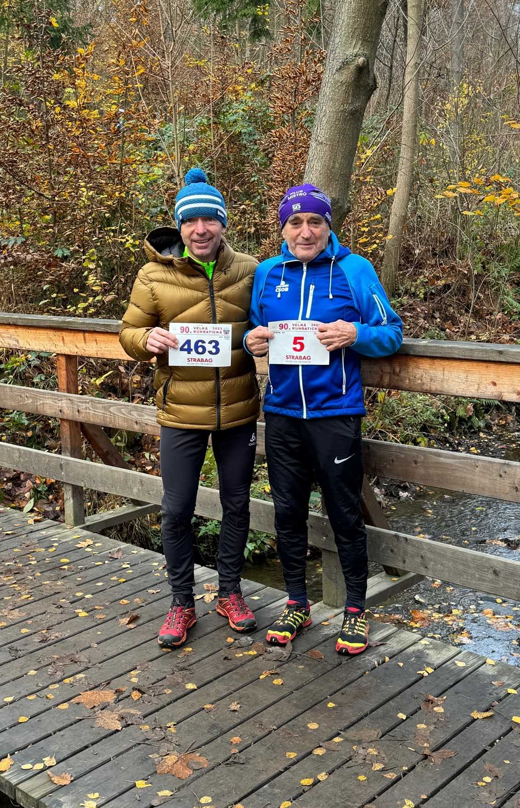
Syn s otcem na stejné lávce o půlstoletí později…
„Výsledky z jednotlivých ročníků si nearchivuji, pouze se domnívám, že jedině v roce 1964 jsem běžel pod 14 minut. Ani už nemohu tvrdit, že si to pamatuji správně,“ napsal Zbyněk Sadil ve svém mailu. Podle oficiálních výsledků z roku 1972 (tehdy se ještě nedělaly výsledkové brožury) můžeme Zbyňkovi sdělit, že běžel s číslem 141 a dosáhl času 15:18, což bylo 126. místo v mistrovské kategorii. V ní tehdy startovali rychlejší běžci, kteří měli rezervovaná čísla na začátku startovního pole, hned za veterány. Čas Honzíka se nám bohužel nepodařilo zjistit, výsledky dětských kategorií z roku 1972 nemáme k dispozici. Zato se podařilo najít Zbyňkův rekordní čas, bylo to z roku 1966 (nikoli tedy 1964), a to výborných 13:08,6 (celkově 55. místo). Bohužel to byl jeden z dvou ročníků, kdy byly výsledné časy pro velké nesrovnalosti anulovány, platí jen orientačně. Nejlepší oficiální Zbyňkův výkon je 14:38,0 z roku 1967.
Děkuji za tuto pěknou vzpomínku a věřím, že bude inspirací pro další veterány a veteránky, aby se s námi podělili o své zážitky z dávných i nedávných ročníků Velké kunratické. LS
Rok 1983 – 50. Velká kunratická (dokončení)
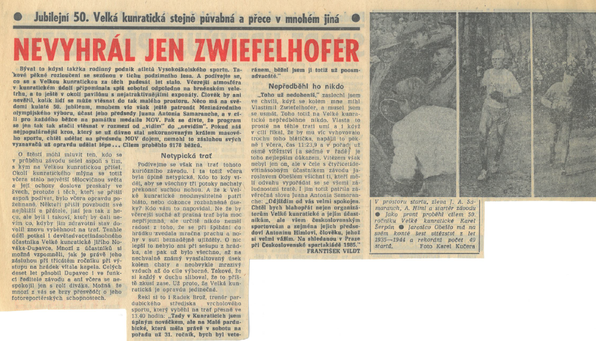
Kombinované hodnocení 1983
| 1. Lubomír Čuhel | (1916) | 233,88 | 6. Jaroslav Cihlář | (1924) | 224,48 |
| 2. Stanislav Otáhal | (1913) | 233,83 | 7. Karel Šerpán | (1931) | 223,06 |
| 3. Josef Pejsar | (1923) | 229,59 | 8. Přemysl Novotný | (1918) | 222,68 |
| 4. Jiří Statečný | (1925) | 226,60 | 9. František Král | (1918) | 219,05 |
| 5. Bedřich Klimeš | (1921) | 226,21 | 10. Václav Chudomel | (1932) | 217,45 |
Malý kvíz pro milovníky sportovní historie
Připomeňte si jména z předchozí tabulky a vzdejte hold legendám Velké kunratické a legendám našeho sportu. Po milovníky sportovní historie jsme připravili malý kvíz:
1/ Kteří borci z tabulky z roku 1983 dokázali Velkou kunratickou vyhrát (kolikrát)?
2/ Kteří borci z uvedené tabulky dokázali vyhrát kategorii veteránů (kolikrát)?
3/ Kteří borci z uvedené tabulky se aktivně zúčastnili olympijských her (kdy a kde)?
Budu rád, když se pokusíte na položené otázky odpovědět, samozřejmě můžete i tipovat. Odpovědi pošlete na mail: ludek.sedlak@gop.cz. Ceny úspěšným řešitelům nenabízím, můžete se však přesvědčit, nakolik se orientujete v naší sportovní historii a jak jste obeznámeni s historií Velké kunratické.
Rok 1973 – 40. Velká kunratická
Slavný 50. ročník Velké kunratické jsme podrobně popsali v minulém čísle (a dokončili v tom dnešním), nyní se podívejme na další jubilejní ročník. Čtyřicátá Velká kunratická se konala v roce 1973 a pro nás je významná tím, že mnozí současní veteráni, pokud již věkem překročili sedmdesátku, byli jejími přímými aktéry. Věřím, že někdejší účastníci si s trochou nostalgie rádi připomenou, jaké to bylo v Kunraticích před rovným půlstoletím.
Mladá kunratická s minimem seniorů
Velkou kunratickou přivítalo příjemně teplé podzimní počasí, maximální denní teplota překročila 10°C (oficiální hodnoty z pražského Klementina uvádějí rozmezí 6,1 až 10,4°C). Hlavní mužská trať měla pět kategorií: veterány plus čtyři kategorie podle věku, Možná vás překvapí, že věkové kategorie byly ve Velké kunratické vypsány teprve podruhé – až do roku 1971 existovala jediná kategorie mužů bez ohledu na věk. Kategorie byly oficiálně vypsány na 20 – 30, 30 – 40, 40 – 50 a nad 50 let, což mohlo svádět k nejednoznačnému výkladu při zařazení běžců, kterým bylo právě 30, 40 či 50 let. Teprve v následujícím ročníku byla tato nejednoznačnost odstraněna.
Před půlstoletím bývaly běžecké závody výsadou mladých. Jak bylo v těch letech běžné, nejpočetněji byla obsazena nejmladší kategorie do 30 let (951 účastníků), naopak v nejstarší kategorii nad 50 let startovalo pouhých 38 běžců, v kategorii veteránů 46.
Elita v kategorii 20 – 30 let. Najdete ve výsledcích sami sebe?
Celkovým vítězem se stal Josef Šach z pražské Slávie časem 12:04,5 před Žahourkem a Burešem, všichni z kategorie do 30 let, ostatně z kategorie 20 – 30 let bylo prvních deset borců celkového pořadí. Na předních místech se umístili mnozí budoucí veteráni, z nichž někteří dosud aktivně běhají nebo skončili teprve před několika lety. Snad si o sobě rádi přečtete a připomenete si, jak nám to běhalo před půlstoletím… V kategorii do 30 let běželi 10.Zajíc 12:47,3, těsně za sebou se seřadili 18.Laholík 13:08,4, 19.Laciga 13:09,0, 20.Sedlák 13:09,5, dále 31.Poustecký 13:22,0, 32.Klimánek 13:23,2, 33.Dohnal 13:23,6, 41.Kervitcer 13:27,8, 43.Vévoda 13:29,4, 68.Peterka 13:46,4, 80.Babánek 13:50,9, 81.Lacina 13:51,2, 85.Jungwirth 13:53,0, 86.Mokrý 13:54,1, 99.Kroupar 14:01,3, abych uvedl alespoň běžce z první stovky výsledkové listiny. Ještě výrazněji promluvili budoucí veteráni do pořadí v kategorii 30 – 40 let. Vítězem se stal František Dvořák 12:49,2, z dalších například 4.Poisl 13:06,2, 7.Wichterle 13:29,0, 8.Eichler 13:30,3, 14.Janoušek 14:01,1, 17.Budka 14:18,0, 20.Machač 14:20,8, 23.Klimpera 14:44,2, 28.Čtvrtečka 15:00,1, 33.Kašpar 15:12,3, 37.Mráz 15:25,7, 42.Neuman 15:31,5, 43.Vonášek 15:33,0, 59.Karlík 15:54,8, 60.Kolský 15:57,2, 61.Šperling 15:59,3, 63.Mráz 15:59,8, 65.Galgonek 16:01,2, 74.Švec 16:16,2, 75.Aschermann 16:18,4. Nemám patent na neomylnost a zcela jistě jsem někoho přehlédl. Bohužel, někteří jmenovaní už nejsou mezi námi…
Kategorii žen na trati 1000 metrů vyhrála Procházková za 3:47,4 před Drahokoupilovou 3:50,2 a Kroužilovou 3:52,0, absolutně nejrychlejší na kilometrové trati však byla mladší dorostenka Vejlupková časem 3:47,0.
Porodní bolesti veteránské kategorie: problém „čestných startů“
Kategorie veteránů se zrodila teprve před pěti roky a už krátce po svém vzniku musela řešit nečekané problémy. Do startovní listiny bylo totiž zařazeno několik „čestných hostů“, kteří sice nesplňovali podmínku 20 absolvovaných startů, ale měli k závodu „mimořádný vztah“. To ale způsobilo mezi veterány hodně zlé krve, zejména poté, co se ukázalo, že kategorie veteránů bude o hodně prestižnější, než se její autoři zprvu domnívali, a zejména když se někteří čestní hosté začali umisťovat na předních místech. Nikdo neprotestoval proti přijetí zakladatelů závodu, kteří se po letech vrátili na start (například Otakar Zelenka – účastník 1. ročníku v roce 1934, MUDr. Jaroslav Skála – účastník ročníků 1935 a 1936, nebo František Král – dvojnásobný vítěz z let 1938 a 1939), rozporuplné reakce však přinesla účast funkcionářů ČSTV (úlitba za podporu závodu na nejvyšších místech) a dalších čestných hostů, z nichž některým nebylo ani 40 let. Až po roce 1989 byly čestné starty definitivně zrušeny a výsledky čestných hostů byly dodatečně anulovány. Dlouhá léta trvalo, než zvítězil rozumný názor, že podmínka 20 startů je nezpochybnitelná a nelze ji nahradit žádnými zásluhami.
Neméně ostré spory se vedly o formě neoficiálního kombinovaného hodnocení. V roce 1973 se hodnotil tzv. dvojboj (výkon a věk) prostým součtem pořadí v obou uvedených kritériích. Výhodou byl jednoduchý a přehledný výpočet, nicméně nedostatků měl tento systém celou řadu. Mimo jiné se v pořadí podle věku hodnotil pouze rok narození a neplechu v tomto pořadí dělaly i zmíněné čestné starty.
Vysoká sportovní úroveň veteránů
Kategorii veteránů vyhrál Karel Šerpán výkonem 14:27,9 před Františkem Králem (ten byl ve výsledcích ponechán, ačkoli šlo o jeho teprve 12. start) a čestným hostem René Grafem ze Švýcarska (měl 37 let a jeho výkon v kategorii veteránů byl později zrušen). Mezi desítkou nejlepších ještě figuruje Bohumil Sýkora z Fakulty tělesné výchovy (rovněž teprve 12. start) a není divu, že někteří veteráni se cítili jejich účastí právem poškozeni.
Kdo si podrobně prohlédne výsledky veteránské kategorie, na první pohled ho zaujme vysoká sportovní úroveň všech startujících. Ze 46 klasifikovaných veteránů dosáhlo 22 času pod 20 minut, čas posledního byl 28:22. Není to náhoda. Sportující senioři byli v té době na jedné straně obdivováni, ale u nesportující veřejnosti se často setkávali s nepochopením a leckdy i s výsměchem. Možná i proto si na trať netroufl nikdo, kdo by svůj start nepodpořil kvalitním sportovním výkonem. Pro zajímavost: čas nejstaršího účastníka, jednoho ze zakladatelů závodu 69letého Jiřího Kabátníka byl 23:03,1.
VYČTENO Z VÝSLEDKů 40. ROČNÍKU 1973
VK 1973 – Muži 20-30 (961 start.) VK 1973 – Muži 30-40 (231 start.)
1. Josef Šach 12:04,5 1. Dvořák Fr. 12:49,2
| 2. Jiří Žahourek | 12:16,1 | 2. Křížek | 12:50,5 |
| 3. Jiří Bureš | 12:22,7 | 3. Svoboda | 13:02,4 |
| 4. Ota Trmal | 12:24,3 | 4. Poisl | 13:06,2 |
| 5. Z. Mizera | 12:33,1 | 5. Jedlička | 13:10,6 |
| 6. Petr Lakomý | 12:39,6 | 6. Princ | 13:13,3 |
| 7. Zdeněk Kolář | 12:40,3 |
8. Jaroslav Štěpánek 12:44,2 VK 1973 – Muži 40-50 (118 start.)
| 9. Jan Suchý | 12:47,0 | 1. Chudomel | 13:37,0 |
| 10. Zdeněk Zajíc | 12:47,3 | 2. Mitáš | 14:24,8 |
| 3. Štemberk | 14:29,3 |
Muži 50+: 1. Štrupp 14:59,2 4. Pánek 14:30,0
| (38 start.) | 2. Pejsar | 15:25,3 | 5. Matzner | 14:43,5 |
| 3. Linoš | 15:58,2 | 6. Kánský | 14:43,5 |
40. VK 1973 – Veteráni (46 start.)
| 1. Karel Šerpán | (1931) | 14:27,9 | 6. Lubomír Čuhel | (1916) | 15:54,3 |
| 2. František Král | (1918) | 15:25,9 | 7. Bohuslav Sýkora | (1922) | 15:56,9 |
| 3. Jaroslav Kalivoda | (1926) | 15:33,2 | 8. František Chaluš | (1930) | 16:02,5 |
| 4. Jiří Novák - Johny | (1922) | 15:35,8 | 9. Karel Malý | (1915) | 16:59,8 |
| 5. Stanislav Otáhal | (1913) | 15:44,1 | 10. Frant. Čmelinský | (1930) | 17:25,5 |
40. VK 1973 – Veteráni dvojboj (věk + pořadí)
| 1. Ladislav Skála | (1908) | 19 (4+15) | 6. Lubomír Čuhel | (1916) | 28 (21+7) |
| 2. Stanislav Otáhal | (1913) | 20 (14+6) | 7. Karel Malý | (1915) | 29 (19+10) |
| 3. Karel Kněnický | (1908) | 23 (4+19) | 8. Karel Šerpán | (1931) | 31 (30+1) |
| 4.-5. František Král | (1918) | 26 (24+2) | 9. Vladimír Švéda | (1915) | 33 (19+14) |
| 4.-5. Sláva Dlouhý | (1906) | 26 (3+23) | 10. Alois Kreuzer | (1909) | 34 (7+27) |
Tradiční ročenka a netradiční výsledková brožura
Jako trofej si účastníci 40. velké kunratické odnesli ročenku, která byla vydávána už od 20. ročníku vždy ke kulatému či půlkulatému výročí závodu. Z ní jsme mimo jiné převzali fotografii Zbyňka Sadila se synem, kterou jste si mohli prohlédnout na straně 10.
Naopak poprvé byla vydána výsledková brožura, která pak byla vydávána každoročně a mnozí účastníci si ji uchovávají jako vzpomínku, stejně jako například startovní číslo. Slabinou této brožury bylo, že křestní jména závodníků jsou uvedena jen u veteránů a na dalších zhruba dvou stránkách výsledkové listiny. Na dalších stranách najdete pouze příjmení bez křestních jmen, navíc často ještě zkomolená. S výjimkou veteránů nebyly zmíněny ani ročníky narození. Nezávidím tomu, kdo bude jednou převádět výsledky z roku 1973 do elektronické podoby. Pokud Karla Schestaubera (veterána s 36 starty) tato záslužná činnost neomrzí, čeká ho perná práce.
Zajímavostí je, že v propozicích se délka trati stále ještě uváděla postaru 3600 metrů, pozdější oficiální přeměření, které ji zkrátilo o půl kilometru, bylo pro mnohé překvapením. Ředitelem závodu byl Vilém Sitter, předchůdce Emila Pospíšila.
Setkání veteránů VK v ÚMČ Praha 4
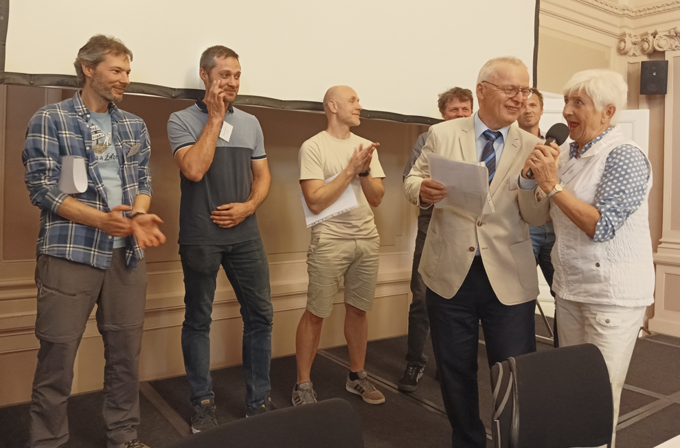
Na tradičním setkání veteránů VK 6. května 2024 byly předány bronzové (za 40 a více startů), stříbrné (50 startů) a jedna zlatá medaile Ivanu Šperlingovi (za 60 startů) „Za věrnost Velké kunratické“. Na snímku v popředí s Jindrou Boušem je Slávka Ročňáková, všestranná sportovkyně a první žena se stříbrnou medailí za věrnost našemu závodu.
Ocenění veteránů medailemi „Za věrnost VK“
Zlatá medaile za 60 absolvovaných startů: Ivan Šperling (1941)
Stříbrné medaile za 50 absolvovaných startů:
Miloslava Ročňáková (1945), Josef Ulrich (1937), Eduard Korb (1940),
Pavel Novák (1948), Zdeněk Laciga (1952), Jan Poustecký (1954).
Nově byly též uděleny bronzové medaile za 40 a více absolvovaných startů. Některé byly předány na srazu 6.5., kdo nebyl přítomen, obdrží medaili na startu letošního 91. ročníku.
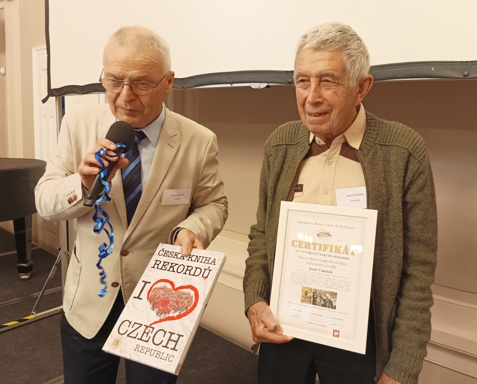
Pepík Vonášek převzal Certifikát o novém rekordu v počtu startů, který posunul na 64. Údaje agentury Dobrý den se musely přepisovat.
Nové přihlašování veteránů přes PC
Po opakovaném naléhání a přesvědčování pořadatelským oddílem Spartak Praha 4 jsme byli nuceni opustit naši dlouholetou výsadu ohledně přihlašování veteránů a počínaje letošním 91. ročníkem se budou muset i veteráni přihlašovat pomocí PC.
S novým systémem přihlašování nás na květnovém setkání veteránů seznámil předseda Spartaku Praha 4 Tomáš Nakládal, který zároveň všechny přítomné ujistil, že všechny ostatní veteránské bonusy zůstanou zachovány. Těmito bonusy jsou: 1/ přednostní právo na startovní číslo, 2/ start na začátku startovního pole, 3/ startovní číslo v pořadí podle počtu startů, v případě rovnosti podle věku, 4/ veteráni se 40 a více starty neplatí startovné.
Jedinou novou povinností bude nutnost přihlášení se v určeném termínu pomocí internetu přes web VK, stejně jako to činí ostatní účastníci VK. Všichni veteráni budou včas oddílem vyzváni, že začíná registrace, a musí se elektronicky přihlásit. Zároveň s přihláškou si lze objednat, tak jako dosud, triko VK. V případě jakýchkoli problémů či nejasností se můžete obrátit na Jindru Boušeho, buď telefonem (777 598 812) nebo mailem (j.bouse@volny.cz).
Veterán Velké kunratické
Časopis určený veteránkám, veteránům a všem příznivcům legendárního závodu
Luděk Sedlák, Týřovická 1346/6, 153 00 Praha 5 – Radotín, tel.: 728 437 333, luse@volny.cz, ludek.sedlak@gop.cz / Číslo 6 / Červenec 2024 / Příští číslo: listopad 2024.
{kind=link}